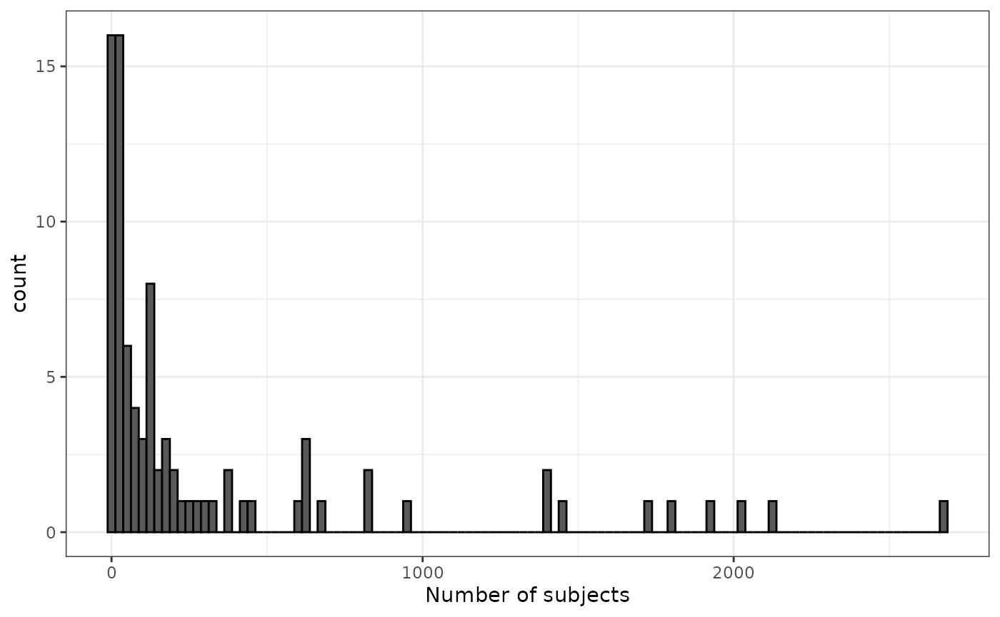

Applying cohort table requirements
Source:vignettes/a02_cohort_table_requirements.Rmd
a02_cohort_table_requirements.RmdIn this vignette we’ll show how requirements related to the data contained in the cohort table can be applied. For this we’ll use the Eunomia synthetic data.
library(omock)
library(CodelistGenerator)
library(CohortConstructor)
library(CohortCharacteristics)
library(ggplot2)
library(dplyr)
cdm <- mockCdmFromDataset(datasetName = "GiBleed", source = "duckdb")Let’s start by creating a cohort of acetaminophen users. Individuals will have a cohort entry for each drug exposure record they have for acetaminophen with cohort exit based on their drug record end date. Note when creating the cohort, any overlapping records will be concatenated.
acetaminophen_codes <- getDrugIngredientCodes(cdm,
name = "acetaminophen",
nameStyle = "{concept_name}")
cdm$acetaminophen <- conceptCohort(cdm = cdm,
conceptSet = acetaminophen_codes,
exit = "event_end_date",
name = "acetaminophen")At this point we have just created our base cohort without having
applied any restrictions. To visualise the current state of the cohort,
we can use the summariseCohortAttrition() function to
summarise attrition and then plot the results using
plotCohortAttrition().
summary_attrition <- summariseCohortAttrition(cdm$acetaminophen)
plotCohortAttrition(summary_attrition)Keep only the first record per person
We can see that in our starting cohort individuals have multiple
entries for each use of acetaminophen. However, we could keep only their
earliest cohort entry by using requireIsFirstEntry() from
CohortConstructor.
cdm$acetaminophen <- cdm$acetaminophen |>
requireIsFirstEntry()
summary_attrition <- summariseCohortAttrition(cdm$acetaminophen)
plotCohortAttrition(summary_attrition)While the number of individuals remains unchanged, records after an individual’s first have been excluded.
Keep only the last record per person
If we want to require cohort entries to last a specific amount of
time then we can use requireDuration(). Here for example we
create an acetaminophen cohort and keep only those records that last for
at least 30 days.
cdm$acetaminophen <- conceptCohort(cdm = cdm,
conceptSet = acetaminophen_codes,
exit = "event_end_date",
name = "acetaminophen") |>
requireDuration(c(30, Inf))
summary_attrition <- summariseCohortAttrition(cdm$acetaminophen)
plotCohortAttrition(summary_attrition)Keep only a range of records per person
If we want to keep only a specific range of records per person, we
can use the requireIsEntry() function. For example, o keep
only the first two entries for each person, we can set
entryRange = c(1, 2).
cdm$acetaminophen <- conceptCohort(cdm = cdm,
conceptSet = acetaminophen_codes,
exit = "event_end_date",
name = "acetaminophen")
cdm$acetaminophen <- cdm$acetaminophen |>
requireIsEntry(entryRange = c(1,2))
summary_attrition <- summariseCohortAttrition(cdm$acetaminophen)
plotCohortAttrition(summary_attrition)Keep only records within a date range
Individuals may contribute multiple records over extended periods. We
can filter out records that fall outside a specified date range using
the requireInDateRange function.
cdm$acetaminophen <- conceptCohort(cdm = cdm,
conceptSet = acetaminophen_codes,
name = "acetaminophen")
cdm$acetaminophen <- cdm$acetaminophen |>
requireInDateRange(dateRange = as.Date(c("2010-01-01", "2015-01-01")))
summary_attrition <- summariseCohortAttrition(cdm$acetaminophen)
plotCohortAttrition(summary_attrition)Keep only if entry lasts a given duration
Let’s create an acetaminophen cohort again.
cdm$acetaminophen <- conceptCohort(cdm = cdm,
conceptSet = acetaminophen_codes,
name = "acetaminophen")If people on start and stop on the same day they will be considered
to be in the cohort for one day. So to require them to have been in the
cohort until at least the day after cohort start we can use the
requireDuration function. Here we’ll create a new cohort
table and then bind our original and new cohorts so that we can see the
impact of this requirement.
cdm$acetaminophen_one_night <- cdm$acetaminophen |>
requireDuration(c(2, Inf),
name = "acetaminophen_one_night") |>
renameCohort("acetaminophen_one_night")
cdm <- bind(cdm$acetaminophen,
cdm$acetaminophen_one_night,
name = "both_cohorts")Now when summarising days in cohort we can see the difference this makes.
summary_attrition <- summariseCohortAttrition(cdm$both_cohorts)
plotCohortAttrition(summary_attrition)
summary_characteristics <- summariseCharacteristics(cdm$both_cohorts)
tableCharacteristics(summary_characteristics |>
filter(variable_name %in% c("Number subjects", "Days in cohort")))|
CDM name
|
||||
|---|---|---|---|---|
|
GiBleed
|
||||
| Variable name | Variable level | Estimate name |
Cohort name
|
|
| acetaminophen | acetaminophen_one_night | |||
| Number subjects | – | N | 2,679 | 2,678 |
| Days in cohort | – | Median [Q25 - Q75] | 15 [8 - 15] | 15 [8 - 15] |
| Mean (SD) | 17.99 (16.17) | 18.55 (16.13) | ||
| Range | 1 to 101 | 2 to 101 | ||
Applying multiple cohort requirements
Multiple restrictions can be applied to a cohort, however it is important to note that the order that requirements are applied will often matter.
cdm$acetaminophen_1 <- conceptCohort(cdm = cdm,
conceptSet = acetaminophen_codes,
name = "acetaminophen_1") |>
requireIsFirstEntry() |>
requireInDateRange(dateRange = as.Date(c("2010-01-01", "2016-01-01"))) |>
renameCohort("entry_before_date")
cdm$acetaminophen_2 <- conceptCohort(cdm = cdm,
conceptSet = acetaminophen_codes,
name = "acetaminophen_2") |>
requireInDateRange(dateRange = as.Date(c("2010-01-01", "2016-01-01"))) |>
requireIsFirstEntry("date_before_entry")
cdm <- bind(cdm$acetaminophen_1,
cdm$acetaminophen_2,
name = "both_cohorts")
summary_attrition <- summariseCohortAttrition(cdm$both_cohorts)If we apply our entry requirement before our date requirement then we have a cohort of people with their first ever record of acetaminophen which occurs in our study period. But if we apply our date requirement before our entry requirement we have a cohort of people with their first record of acetaminophen in the study period, but this will not necessarily be their first record ever.
plotCohortAttrition(summary_attrition)Keep only records from cohorts with a minimum number of individuals
Another useful functionality, particularly when working with multiple
cohorts or performing a network study, is provided by
requireMinCohortCount. Here we will only keep cohorts with
a minimum count, filtering out records from cohorts with fewer than this
number.
As an example let’s create a cohort for every drug ingredient we see in Eunomia. We can first get the drug ingredient codes.
medication_codes <- getDrugIngredientCodes(cdm = cdm, nameStyle = "{concept_name}")
medication_codes
#>
#> - acetaminophen (7 codes)
#> - albuterol (2 codes)
#> - alendronate (2 codes)
#> - alfentanil (1 codes)
#> - alteplase (2 codes)
#> - amiodarone (2 codes)
#> along with 85 more codelistsWe can see that when we make all these cohorts many have only a small number of individuals.
cdm$medications <- conceptCohort(cdm = cdm,
conceptSet = medication_codes,
name = "medications")
cohortCount(cdm$medications) |>
filter(number_subjects > 0) |>
ggplot() +
geom_histogram(aes(number_subjects),
colour = "black",
binwidth = 25) +
xlab("Number of subjects") +
theme_bw()
If we apply a minimum cohort count of 500, we end up with far fewer cohorts that all have a sufficient number of study participants.
cdm$medications <- cdm$medications |>
requireMinCohortCount(minCohortCount = 500)
cohortCount(cdm$medications) |>
filter(number_subjects > 0) |>
ggplot() +
geom_histogram(aes(number_subjects),
colour = "black",
binwidth = 25) +
xlim(0, NA) +
xlab("Number of subjects") +
theme_bw()